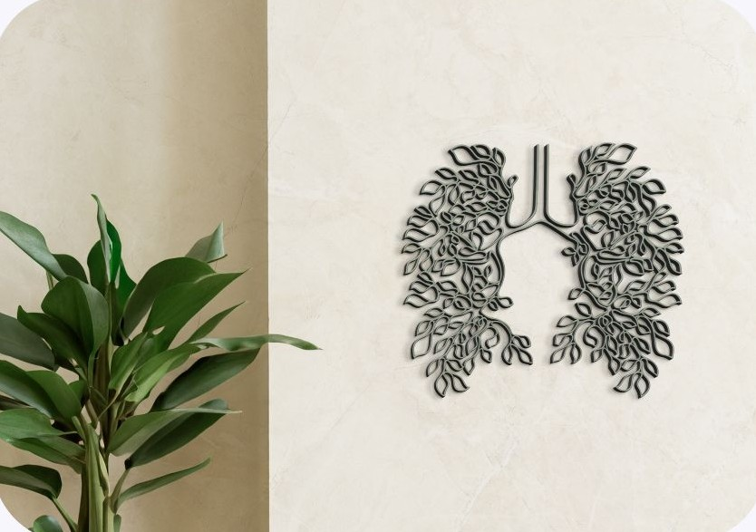
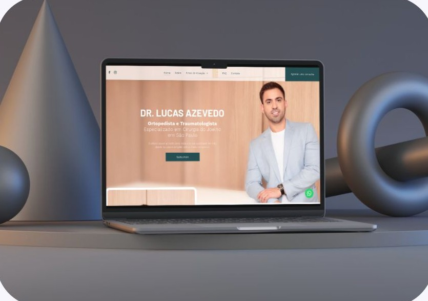
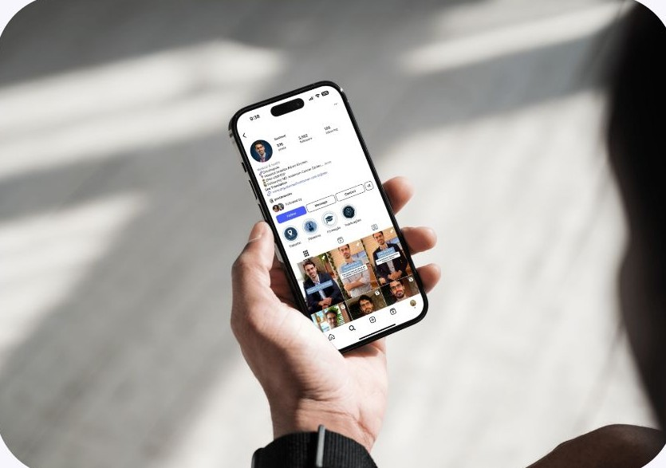
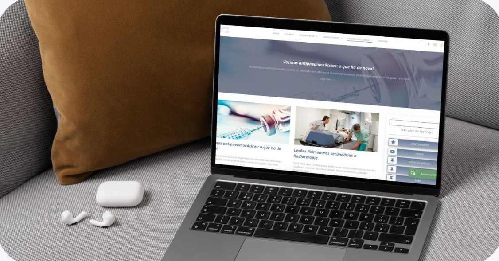

AUTORIDADE E POSICIONAMENTO
Construir uma identidade profissional consistente, valorizando suas qualificações, conhecimentos e diferenciais reais.
MARKETING ESTRATÉGICO PARA MÉDICOS E CLÍNICAS
Seu conhecimento e sua trajetória profissional merecem ser reconhecidos.
A Nexus conecta posicionamento, identidade, marketing digital, tecnologia e relacionamento para fortalecer sua autoridade médica e desenvolver uma comunicação alinhada às normas do Conselho Federal de Medicina.
Uma trajetória médica é construída com formação, experiência, conhecimento e responsabilidade.
Mas sua comunicação digital consegue transmitir tudo isso?
Ter redes sociais ativas, investir em anúncios ou criar um site não significa, necessariamente, ter uma estratégia bem estruturada.
O desafio é fazer com que sua identidade profissional seja reconhecida, sua comunicação gere confiança e seus canais de atendimento estejam preparados para receber o interesse do público.
Não basta estar presente. É preciso comunicar seu valor com clareza e consistência.
Na Nexus, entendemos que médicos e clínicas possuem trajetórias, objetivos e realidades diferentes.
Por isso, desenvolvemos estratégias que conectam três dimensões:
Construir uma identidade profissional consistente, valorizando suas qualificações, conhecimentos e diferenciais reais.
Fortalecer sua presença nos canais digitais com conteúdo, posicionamento e estratégias de divulgação alinhadas ao seu público.
Conectar o interesse gerado pelo marketing a uma comunicação mais organizada, humanizada e eficiente com o consultório ou clínica.
Da construção da marca ao relacionamento com o paciente, cada ponto de contato importa.
ESTRATÉGIA COM RESPONSABILIDADE
A publicidade médica possui normas e limites próprios.
Conteúdos, anúncios, imagens e informações profissionais precisam ser planejados com atenção às exigências éticas e regulatórias aplicáveis à medicina.
Por isso, a Nexus desenvolve suas estratégias considerando as normas do Conselho Federal de Medicina (CFM), as orientações pertinentes dos Conselhos Regionais de Medicina (CRMs) e a legislação aplicável.
COMUNICAÇÃO MÉDICA RESPONSÁVEL
Autoridade se constrói com conhecimento, coerência e credibilidade.
Nosso compromisso é valorizar sua trajetória profissional por meio de estratégias de comunicação que respeitem as particularidades da medicina.
SOLUÇÕES NEXUS




FLAKEDESK | CRM COM INTELIGÊNCIA ARTIFICIAL
Quando as conversas chegam por canais diferentes, acompanhar contatos, organizar informações e dar continuidade ao atendimento pode se tornar mais complexo.
O FlakeDesk conecta atendimento, CRM, inteligência artificial e automações em uma plataforma integrada.
Tudo conectado para sua equipe atender com mais contexto.
Converse pelos canais digitais integrados em um ambiente centralizado, com acesso ao contato, à origem e ao histórico do relacionamento.
Organize informações, responsáveis, registros e etapas do relacionamento, favorecendo o acompanhamento de cada oportunidade.
Recursos de IA ajudam a resumir conversas, localizar informações e sugerir respostas e próximos passos, preservando a supervisão humana.
O chatbot pode apoiar o atendimento inicial e encaminhar a conversa para um profissional da equipe quando necessário.
Fluxos de automação podem apoiar a classificação de contatos, o acompanhamento de pendências, a atribuição de responsáveis e as notificações internas.
Organize etapas de relacionamento e acompanhe informações de gestão para identificar oportunidades de melhoria no atendimento.
Mais organização para sua equipe. Mais continuidade em cada conversa.
O FlakeDesk apoia a comunicação administrativa e o relacionamento da clínica, sem substituir a avaliação, a orientação ou a decisão do profissional de saúde.
Quero conhecer o FlakeDeskA forma como uma clínica se apresenta, responde a uma dúvida ou conduz um agendamento faz parte da percepção que as pessoas constroem sobre seu atendimento.
Por isso, o marketing não deve terminar quando alguém envia uma mensagem.
Na Nexus, consideramos a jornada de relacionamento como parte importante da estratégia de comunicação.
Informações claras e canais de comunicação acessíveis para que o público saiba como entrar em contato.
Fluxos de comunicação que ajudem a recepção a acompanhar solicitações e encaminhamentos administrativos.
Linguagem acolhedora, profissional e adequada às necessidades de quem procura informações sobre atendimento.
Organização dos contatos e das interações administrativas para favorecer uma experiência consistente ao longo da jornada.
Uma boa experiência de comunicação ajuda a construir confiança antes e depois do atendimento presencial.
MÉTODO IDENTIFICA
Cada profissional da medicina possui uma trajetória e uma identidade que não deveriam ser substituídas por fórmulas genéricas de comunicação.
O Método IDENTIFICA orienta nossa construção estratégica, conectando identidade profissional, posicionamento, percepção de valor e confiança.
Por meio dessa abordagem, buscamos desenvolver uma presença digital que comunique seus diferenciais reais, fortaleça seu reconhecimento e mantenha coerência com os princípios da publicidade médica.
Mais do que aparecer, é preciso ser reconhecido pelo valor do seu trabalho.
Uma comunicação médica eficiente não depende apenas de criatividade ou frequência de publicações.
Ela precisa considerar a identidade do profissional, as necessidades de seu público, as particularidades do setor e os canais de relacionamento do consultório.
Marketing orientado pelos objetivos e pelo momento da clínica.
Uma comunicação construída a partir das qualificações e dos diferenciais profissionais.
Atenção às normas e aos limites éticos da publicidade médica.
Ferramentas para apoiar a organização e a continuidade do atendimento.
Uma visão do relacionamento que não termina na publicação ou no anúncio.
Sua comunicação deve refletir a seriedade com que você exerce a medicina.
Converse com o nosso time sobre seu consultório ou clínica.
Vamos conhecer seus objetivos, compreender os desafios da sua comunicação e avaliar quais soluções fazem sentido para sua realidade.
Agendar minha reunião